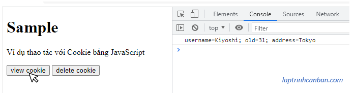
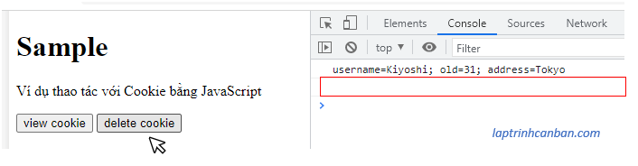

Cùng tìm hiểu về Cookie trong JavaScript. Bạn sẽ biết Cookie trong JavaScript là gì cũng như các cách thao tác với Cookie trong JavaScript sau bài học này.
Cookie trong JavaScript là gì
Cookie trong JavaScript hay còn gọi là Cookie HTTP, cookie web, cookie trình duyệt là một phần dữ liệu nhỏ được lưu trữ tại trình duyệt web của người dùng. Cookie có thể được máy chủ gửi đến trình duyệt và lưu giũ tại trình duyệt, và ngược lại thì trình duyệt cũng có thể gửi lại cookie đã lưu thông tin tới máy chủ.
Cookie được sử dụng chủ yếu để lưu thông tin của người dùng, ví dụ như tên, ip hoặc thời gian truy cập chẳng hạn.
Để thao tác và làm việc với Cookie trong JavaScript, chúng ta cần sửu dụng tới thuộc tính cookie của window.document Object như sau:
document.cookie
Tạo Cookie trong JavaScript
Cookie trong JavaScript được lưu giữ dưới định dạng một cặp tên kèm giá trị 'NAME=VALUE'. Chúng ta có thể tạo một Cookie và ghi nó vào trong document.cookie trong JavaScript với cú pháp sau đây:
document.cookie = 'name=value
Trong đó name và value là tên và giá trị tương ứng của cookie được tạo.
Ví dụ cụ thể:
document.cookie = "username=kiyoshi"; |
Lại nữa, chúng ta cũng có thể lưu đồng loạt nhiều cookie vào trong document.cookie, với các cookie (các cặp name-value) cách nhau bởi dấu chấm phẩy như sau:
document.cookie = 'name1=value1; name2=value2; ...'
Ví dụ:
document.cookie = "username=kiyoshi; old=31"; |
Tất nhiên chúng ta cũng có thể ghi lần lượt từng cookie vào document.cookie như sau:
document.cookie = "username=kiyoshi"; |
Bạn cũng có thể sử dụng biến để tạo cookie như sau:
let myname = 'kiyoshi'; |
Lưu ý nếu giá trị của name hoặc value chứa dấu :, dấu ,, dấu cách hoặc ký tự tiếng Nhật, thì cần phải dùng các phương thức như encodeURI và encodeURIComponent với chúng trước khi ghi vào trong cookie.
document.cookie = "onakaga=" + encodeURIComponent('へった'); |
Cuối cùng, ngoài tên và giá trị thì bạn cũng có thể chỉ định thêm nhiều thuộc tính khác cho cookie, ví dụ như thêm cả thời gian hết hạn cho một cookie với thuộc tính expires chẳng hạn:
document.cookie = "username=kiyoshi; expires=Mon, 27 Dec 2022 19:00:00 UTC;"; |
Hướng dẫn cụ thể đã được Kiyoshi chia sẻ trong bài dưới đây:
Đọc Cookie trong JavaScript
Để đọc toàn bộ các Cookie trong JavaScript, chúng ta tham chiếu trực tiếp đến document.cookie như sau:
document.cookie
Khi đó, toàn bộ các cookie được liên kết với trang web đang mở sẽ được lấy.
Ví dụ cụ thể, chúng ta có thể in toàn bộ các cookie ra màn hình console với mã lệnh sau:
console.log(document.cookie); |
Chúng ta cũng có thể gán document.cookie vào một biến và sử dụng trong chương trình như sau:
var x = document.cookie; |
Lấy Cookie bằng tên của nó trong JavaScript
Khi tham chiếu trực tiếp đến document.cookie, toàn bộ các cookie (các cặp name-value) liên kết với trang web hiện tại sẽ được lấy ra.
Tuy nhiên thì chúng ta cũng có thể lấy ra một cookie với tên cụ thể từ trong các cookie đó, với mã lệnh sau đây:
let cookies = document.cookie; //Lấy toàn bộ cookie |
Chúng ta cũng có thể sử dụng đến biểu thức chính quy để làm việc này.
var cookies = document.cookie; |
Thay đổi Cookie trong JavaScript
Để thay đổi Cookie trong JavaScript, chúng ta đơn giản ghi đè nội dung cookie mới có cùng tên vào document.cookie là xong.
document.cookie = 'name = new_value';
Trong đó name là tên của cookie cần thay đổi giá trị và new_value là giá trị mới của nó.
Ví dụ, chúng ta có thể tạo một cookie có tên là username rồi thay thế giá trị ban đầu của nó như sau:
document.cookie = "username=kiyoshi"; |
Khi đó cookie có username=kiyoshi sẽ chuyển thành username=kiyoshi và lưu lại vào trong document.cookie.
Xoá Cookie trong JavaScript
Để xoá Cookie trong JavaScript, chúng ta cần thiết lập thời gian hết hạn của nó (bằng thuộc tính Expires) bằng một mốc thời gian trong quá khứ, hoặc là thiết lập thời gian tồn tại của nó (bằng thuộc tính Max-Age) bằng 0.
Ví dụ, nếu thời gian hiện tại là Mon, 06 Jan 2022 18:11:30 GMT thì chúng ta có thể xoá một cookie bằng một mốc thời gian trước thời gian này như sau:
document.cookie = 'username=kiyoshi; Expires=Mon, 06 Jan 2000 18:11:30 GMT'; |
Xoá toàn bộ Cookie trong JavaScript
Để xoá toàn bộ Cookie trong JavaScript, chúng ta cần xoá từng cookie đã thiết lập bằng một trong hai phương pháp mà Kiyoshi đã giới thiệu ở trên.
Để làm được điều đó, chúng ta cần dùng vòng lặp để truy cập và thiết lập cho từng cookie với mã lệnh sau:
let cookies = document.cookie; |
Mã mẫu
Sau đây hãy cũng xem demo về Cookie trong JavaScript bằng mã HTML sau đây:
|
Với mã HTML này, khi click vào nút view thì các cookie sẽ được tạo ra và ghi vào document.cookie như sau:

Sau đó khi khi click vào nút delete thì toàn bộ các cookie có trong trang web hiện tại sẽ bị xoá đi:

Tổng kết
Trên đây Kiyoshi đã hướng dẫn bạn về Cookie trong JavaScript rồi. Để nắm rõ nội dung bài học hơn, bạn hãy thực hành viết lại các ví dụ của ngày hôm nay nhé.
Và hãy cùng tìm hiểu những kiến thức sâu hơn về JavaScript trong các bài học tiếp theo.
URL Link
HOME › học javascript - lập trình javascript cơ bản>>16. javascript và broswer